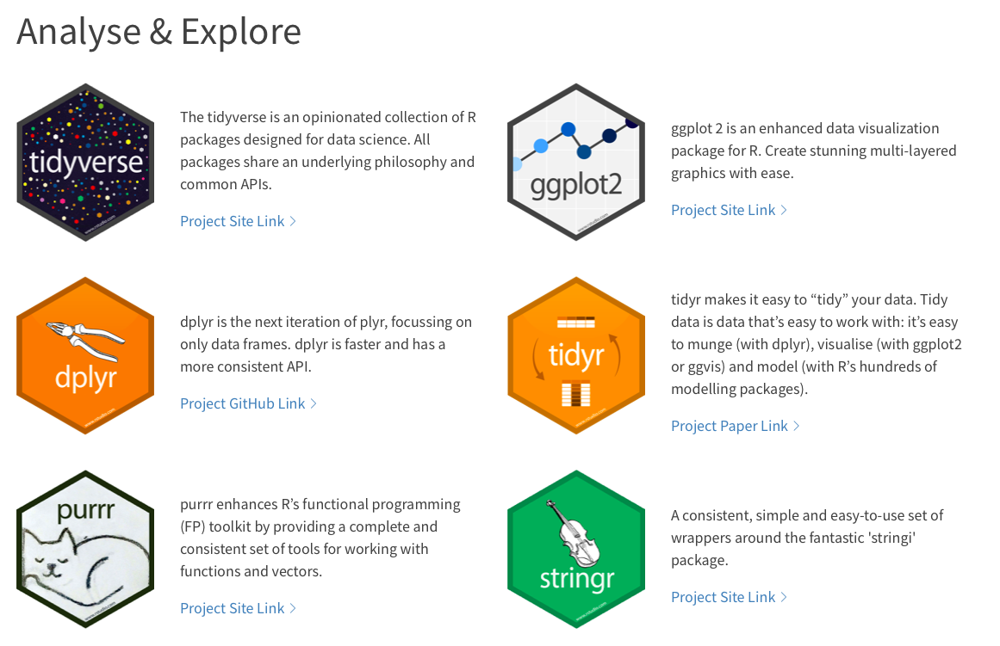
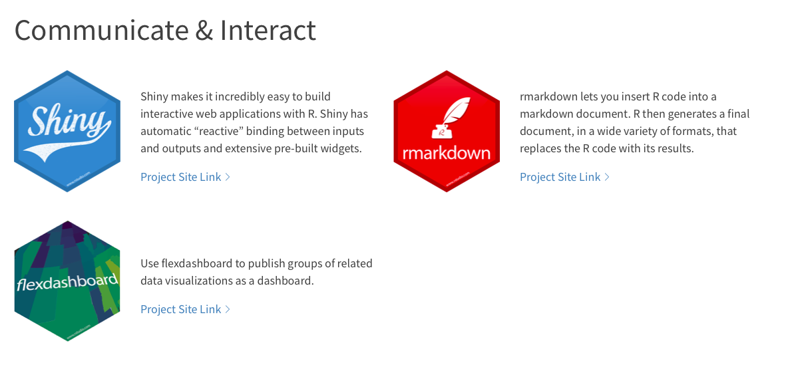
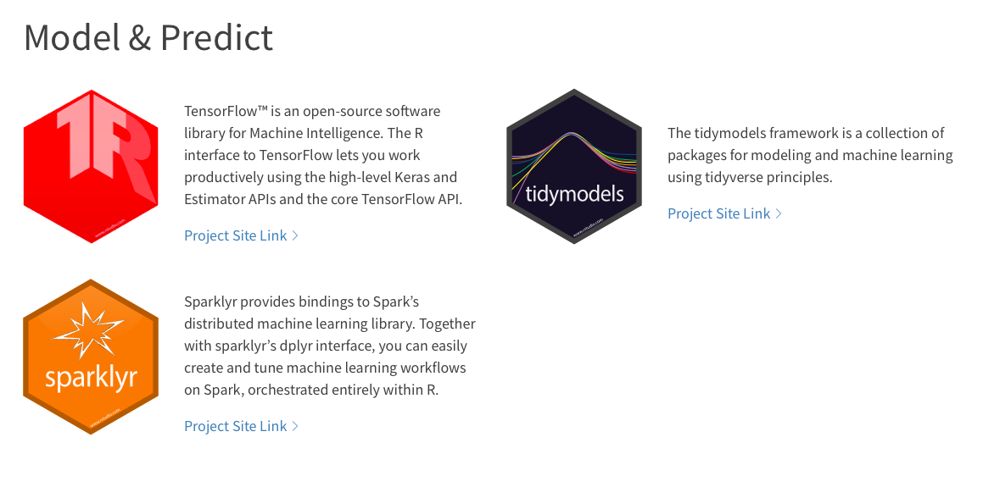
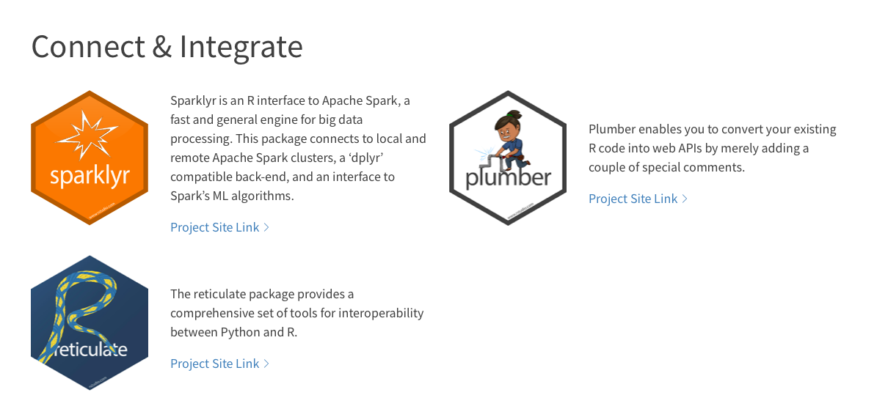

Bölüm3 Genel Bakış
3.1 R: Nedir?

İstatistiksel analiz ve veri görselleştirme amacıyla geliştirilen R, açık kaynak olup ücretsizdir. R, dizayn olarak var olan iki dilden etkilenmiştir; Becker, Chambers & Wilks’in S programlama dili ve Sussman’ın Scheme programlama dilidir. R, başlangıçta Yeni Zelanda Auckland’daki Auckland Üniversitesi İstatistik Bölümü’nde Ross Ihaka ve Robert Gentleman tarafından yazılmıştır. Ek olarak, büyük bir grup insan, kod ve hata raporları göndererek katkıda bulunmuştur. Tarihçeyi merak edenler A Brief History of S (Becker 2004) kaynağını inceleyebilir.
1997 ortalarından itibaren çekirdek bir yapı (The R Core Team) yönetimi sürdürmektedir.
The R Journal: R kullanıcıları için hakemli ve açık erişimli dergi
Kitaplar: R kullancıları için çeşitli alanlarda/dillerde kaynak kitaplar
Hangi komutun ne işe yaradığını anımsayamıyorsanız veya bir hata ile karşılaştıysanız
GOOGLE kullanın.Programlama öğrenmenin en iyi yolu denemek ve hata yapmaktır.3.1.1 RStudio

R üzerinde doğrudan çalışabilir veya bir grafik ara yüzü olan RStudio’nun zengin özelliklerinden faydalanma imkanından yararlanabilirsiniz. Uygulama kolaylığı sağlayan bir entegre geliştirme ortamı (integrated development environment (IDE)) olan RStudio, Windows, Mac ve Linux ile çalışabilir. RStudio’yu kullanışlı kılan birçok özellik mevcuttur, bunlardan birkaçı şu şekilde sıralanabilir.
Script
Kodlama geçmişi, güçlü grafiksel altyapı
Cheatsheetler
Değişken ve fonksiyon tamamlama özelliği
3.2 R: Neden?
Veri analizi için kullanılabilecek SAS, SPSS, Excel, MATLAB gibi birçok yazılım mevcutken neden R kullanıyoruz?
Ücretsiz (open source)
Geniş kullanım kitlesi
Dünyada 2 milyondan fazla kullanıcıya sahip
Sürekli gelişmeye devam eden yapısı
Geniş forum ağı
Uygulama ve kullanım kolaylığı
Grafik ve görsel üretimindeki başarısı
Paket kullanım imkanı
Raporlama kolaylığı ve RMarkdown sayesinde kolay sunum
R aynı zamanda bazı dezavantajlara da sahiptir.
Güncelleneme gereksinimi
Uzmanlaşmanın diğer programlara göre biraz daha zor olması
3.3 R: Help
R’da karşılacağınız problemler için menüde yer alan Help kısmını kullanabilir veya Stackoverflow gibi forumlardan faydalanabilirsiniz. Windows, Mac işletim sistemleri ve genel sorular için üç farklı FAQ (Frequently Asked Questions) kısmı mevcuttur.
Kullanacağınız fonksiyonun ismini biliyorsanız ? kullanarak yine help içeriğinden faydalanabilirsiniz.
?sumKullanacağınız fonksiyonun ismini biliyor fakat hangi pakette yer aldığını bilmiyorsanız bu noktada find komutu size yardımcı olacaktır.
find("sum")## [1] "package:base"Kullanacağınız fonksiyon ile ilgili örnek araştırmak isterseniz example komutu işinizi görecektir.
example(sum)##
## sum> ## Pass a vector to sum, and it will add the elements together.
## sum> sum(1:5)
## [1] 15
##
## sum> ## Pass several numbers to sum, and it also adds the elements.
## sum> sum(1, 2, 3, 4, 5)
## [1] 15
##
## sum> ## In fact, you can pass vectors into several arguments, and everything gets added.
## sum> sum(1:2, 3:5)
## [1] 15
##
## sum> ## If there are missing values, the sum is unknown, i.e., also missing, ....
## sum> sum(1:5, NA)
## [1] NA
##
## sum> ## ... unless we exclude missing values explicitly:
## sum> sum(1:5, NA, na.rm = TRUE)
## [1] 153.4 Paketler
R programlama dili ile kendi döngülerinizi oluşturabilir, özgün kodlarınızı yazabilirsiniz, aynı zamanda paketler yardımı ile yazılmış olan zengin hazır kod içeriğinden de faydalanabilirsiniz (internet bağlantısı gerektirir). Bu zengin içeriğe hazırladığınız paketler ile dahil olma imkanınız da mevcut.
Paket indirme konusunda problem yaşıyorsanız R’ı yönetici olarak çalıştırmayı deneyin.
Paket yükleme işleminin hızlı olabilmesi için size en yakın mirror seçimini yapmalısınız.
Paketler kullanım kolaylığı ve zamandan kazanç sağlamakla birlikte kullanılmadan önce içeriğin dikkatlice incelenmesi önemlidir. Tanımlamaları iyi anlaşılmadan kullanılan paketlerle yanlış sonuçlar elde edilmesi kaçınılmazdır.



